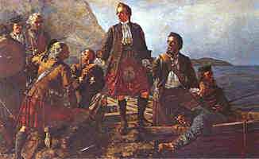

|
Chorus
Speed bonnie boat, like a bird on the wing Onward, the sailors cry Carry the lad that is born to be king Over the sea to Skye.
1. Loud the winds howl, loud the waves roar
2. Though the waves leap, soft shall ye sleep
3. Many's the lad fought on that day
4. Burned are our homes, exile and death
|
Refrain
Comme l'oiseau fuyant à tire d'aile, Vers Skye, barque, hâte-toi! Sauve celui que la Parque cruelle Empêcha d'être roi.
1. Hurle le vent, rugisse la houle
2. La mer en rage est ta couche royale.
3. Plus d'un héros, en ce jour de peine
4. La mort, l'exil, l'incendie de nos fermes
(Trad. Ch.Souchon (c) 2003) |
|
Miss Annie MacLeod (Lady Wilson) collected the tune when, in the 1870's, she was on a trip to the Isle of Skye. She was being rowed over Loch Coruisk when the rowers broke out into the rowing song "Cuchag nan Craobh" (The Cuckoo in the Grove). Miss MacLeod fashioned this song into an air which she set down in order to use it later in a book she was to co-author with Sir Harold Boulton. It was he that transformed the initial words of the song:
Row us along, Ronald and John Over the sea to Roshven into: Over the sea to Skye and introduced the heroic figures of Bonny Prince Charlie and Flora MacDonald. Soon people began "remembering" they had learned the song in their childhood, and that the words were 'old Gaelic lines'. In 1893 a teacher named Margaret Bean composed another set of lyrics to the song: For instance, Bean's words go: Waft him, ye winds, Far o'er the sea, Far from a traitor's eye, Fly, little boat, That our Prince may be free Over to loyal Skye. The iorram (pronounced-irram) or rowing songs were sung in ¾ or a slow 6/8 time. The 1st beat is very pronounced and corresponds with lifting the oars out and swinging them forward, 2 and 3 are the pulling stroke. Some of these airs were or still in use as waltzes in the Western Isles.” |
Miss Annie MacLeod (Lady Wilson) recueillit cette mélodie dans les années 1870, lors d'un voyage à l'Ile de Skye. Elle traversait en barque le Loch Coruisk quand les rameurs entonnèrent la barcarole "Cuchag nan Craobh" (le coucou dans le fourré). Miss MacLeod façonna ce chant pour en faire un "air" dont elle prit note en vue de l'utiliser plus tard dans un livre qu'elle écrivait en collaboration avec Sir Harold Boulton qui remplaça le texte initial de la chanson:
Vos rames nous conduisent, Ronald et John Par delà la mer vers Roshven par: Sur la mer jusqu'à Skye et y introduisit les héroïques figures de Bonny Prince Charlie et Flora MacDonald. Des gens ne tardèrent pas à "se souvenir" qu'ils avaient appris ce chant étant petits et que c'était un 'vieux poème en gaélique'. En 1893 une maitresse d'école du nom de Margaret Bean composa un autre texte pour ce chant: Un exemple du texte de Margaret Bean: Portez-le, vous les vents, Au loin, par delà la mer, Loin de l'oeil du traitre! Empresse-toi, frêle esquif, De conduire notre Prince vers la liberté Vers l'Ile loyale de Skye! Les "iorram" (prononcé-"irram") ou chants de rameurs étaient chantés sur un rythme à ¾ temps ou à 6/8 temps ralenti. Le premier temps, très prononcé correspond à la levée des rames et leur déport vers l'avant; aux temps 2 et 3 on tire sur les rames. Certains de ces airs étaient ou sont encore utilisés comme valses dans les Hébrides.” |
The "Corries" sing "Speed Bonny Boat"